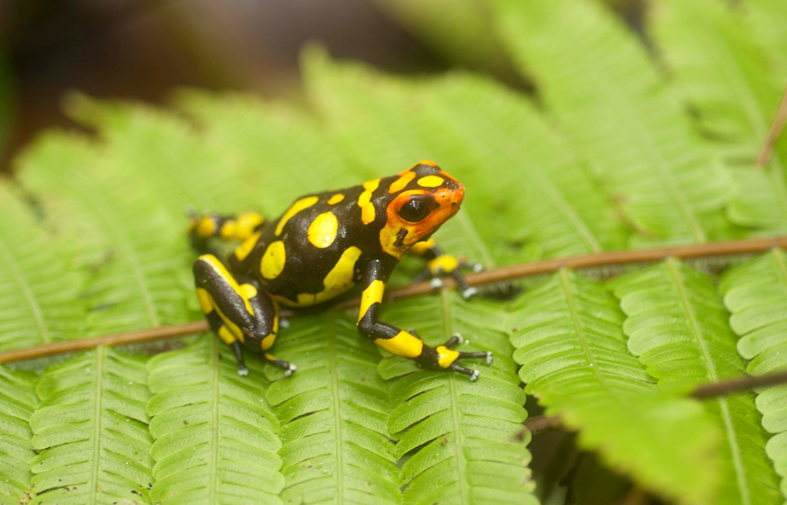
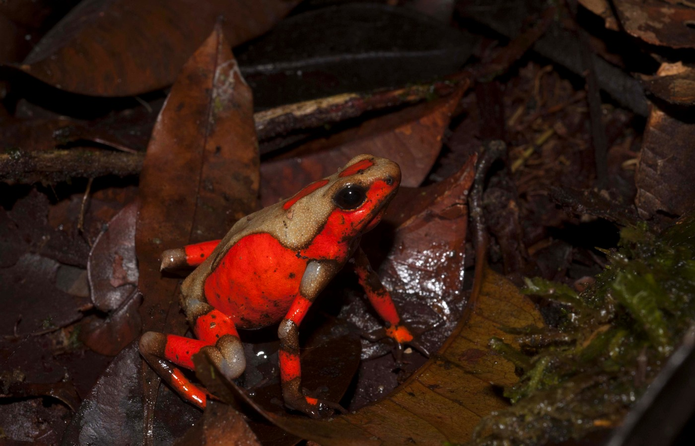
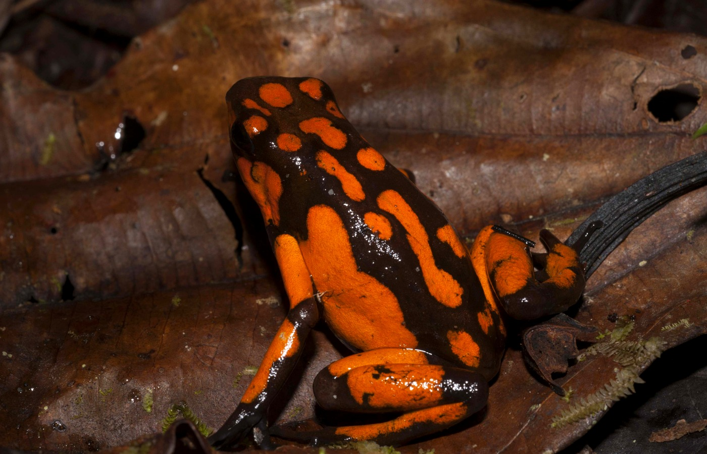

New speciesColombia endemic
Oophaga anchicayensis
Named from San José de Anchicayá, Buenaventura, Valle del Cauca. This lineage is part of the Oophaga histrionica group and is tied to the rainforests of western Colombia.

A research story from the rainforests of Colombia: brightly coloured Oophaga poison frogs, hidden diversity, molecular tools, warning colours, coloration genetics, hybridization, and the urgent conservation value of giving unnamed lineages a scientific identity.
Poison frogs are famous because they look impossible: tiny bodies painted in black, yellow, orange, red, and green. But colour is only the beginning. In the Colombian Chocó, those patterns can signal geography, evolutionary history, genetic boundaries, predator warning, and conservation urgency.
In a 2017 paper in Evolution, Posso-Terranova and Andrés explored how aposematic colour patterns can diversify and converge rapidly in harlequin poison frogs. The study connected visible colour differences to deeper biological mechanisms, including truncated receptors and cellular arrangements that help produce repeated warning signals.
My work on Oophaga poison frogs combines field sampling, morphology, colour variation, ecological niche data, microsatellites, transcriptome-derived markers, and genome-scale thinking to ask a deceptively simple question: when does a colour pattern represent local variation, and when does it reveal an evolutionary lineage?
In 2018, work published in Molecular Ecology showed that two previously recognized Oophaga species actually concealed additional evolutionary lineages. Three of those lineages were described as new species.
Named from San José de Anchicayá, Buenaventura, Valle del Cauca. This lineage is part of the Oophaga histrionica group and is tied to the rainforests of western Colombia.

Described from the Chocó department of Colombia, with the type locality near San José del Palmar. Its distribution highlights how much biodiversity remains hidden in narrow, fragmented rainforest landscapes.

Named for Bahía Solano and known from the northwestern Colombian Chocó. Its black body with bright orange-red markings makes it visually unforgettable — and conservation-relevant.

The work used multiple, independent biological signals. The point was not to name frogs because they looked different, but to test whether colour, ecology, morphology, and genetic data converged on the same evolutionary boundaries.
Targeted amplicon sequencing, microsatellites, and transcriptome-derived markers helped test whether colourful forms represented independent evolutionary lineages.
Warning colour in Oophaga is not just decoration. The 2017 Evolution paper showed how colour diversification and convergence can emerge through biological mechanisms that shape visible warning signals.
Species names matter. Without formal recognition, lineages can remain invisible to policy, conservation planning, and anti-trafficking decisions.
The Evolution paper adds an essential layer to the poison frog story: colour is not only beautiful, and not only useful for identification. In aposematic frogs, colour is a biological language shaped by selection, cellular architecture, and molecular change.
By studying diversification and convergence of colour patterns in harlequin poison frogs, this work helped frame warning coloration as an evolutionary trait that can change rapidly, repeat across lineages, and still carry information about history, ecology, and adaptation.
Follow-up work in Molecular Ecology examined the origin of striking Colombian poison frog hybrids. Rather than being treated as accidental products of recent human movement or wildlife trafficking, the hybrids revealed a deeper evolutionary story: divergence, gene flow, warning colour, and natural hybridization interacting across the rainforest landscape.
This matters because conservation policy often treats human-caused hybrids very differently from naturally occurring hybrid lineages. In this case, the genetic evidence supported the idea that the hybrid populations are part of the evolutionary history of these frogs — not a conservation inconvenience to be erased.
The conclusion was elegant and important: the hybrids, Oophaga anchicayensis, and Oophaga lehmanni all deserve protection as living pieces of Colombia’s evolutionary diversity.
The hybridization study adds a second act to the species-discovery story: once lineages are recognized, their interactions can reveal how evolution continues to generate diversity.
The hybrid populations were interpreted as part of a natural evolutionary process, changing how their conservation value should be understood.
Species boundaries are not always walls. In these frogs, divergence and gene flow can coexist while colour patterns remain biologically meaningful.
When hybrids are natural, they may represent evolutionary novelty rather than contamination — a crucial distinction for endangered species management.
A compact view of how this work developed from niche divergence and species boundaries to hybridization and skin transcriptomics.
Research in Journal of Biogeography examined how niche divergence is associated with diversification in Oophaga poison frogs.
Work in Evolution examined diversification and convergence of colour phenotypes in harlequin poison frogs, linking warning colour to cellular arrangements and molecular mechanisms.
Multivariate species delimitation combined morphology, ecology, and genetics, revealing at least five species in the Oophaga histrionica complex, including three new to science.
A Molecular Ecology study showed that Colombian poison frog hybrids originated through natural evolutionary processes involving divergence, gene flow, and aposematic phenotypes.
Transcriptomic work explored the genetic basis of aposematic traits by examining skin expression profiles in Oophaga poison frogs.
The research reached beyond the literature because it connects science with Colombian biodiversity, illegal wildlife trade, and conservation policy.
“If we don’t know new species exist, how can we protect them?”
University of Saskatchewan coverage highlighted the discovery of three new poisonous Colombian frogs and the conservation importance of naming them.
Read the feature →A focused publication arc: niche divergence, colour evolution, species discovery, natural hybridization, and transcriptomic exploration of aposematic traits.
Posso-Terranova & Andrés. Journal of Biogeography, 2016.
Posso-Terranova & Andrés. Evolution, 2017. The colour-evolution paper linking warning colour diversity and convergence to biological mechanisms underlying pigmentation.
Posso-Terranova & Andrés. Molecular Ecology, 2018. The species-boundary paper that described O. anchicayensis, O. andresi, and O. solanensis.
Ebersbach, Posso-Terranova, Bogdanowicz, Gómez-Díaz, García-González, Bolívar-García & Andrés. Molecular Ecology, 2020. This paper clarified the natural origin of endangered Colombian poison frog hybrids and linked hybridization to conservation policy.
Posso-Terranova & Andrés. Genetics and Molecular Biology, 2020.
The lesson is simple and brutal: biodiversity cannot be protected if it remains unnamed. These frogs are not just colourful organisms. They are warning signals, evolutionary lineages, conservation units, hybrid zones, and living evidence that Colombia’s rainforests still hold worlds we are only beginning to see.